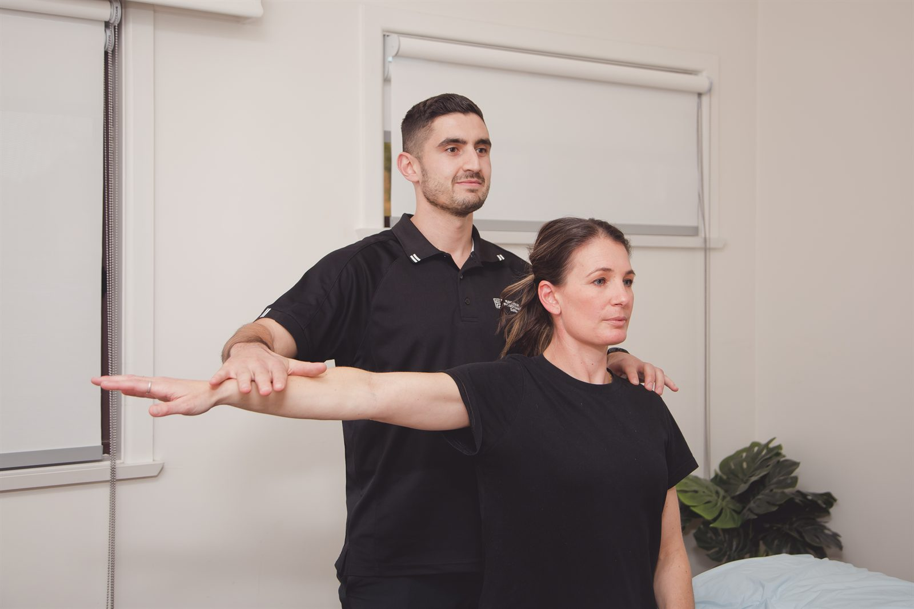
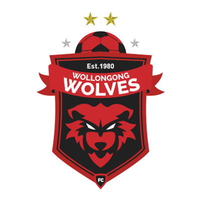
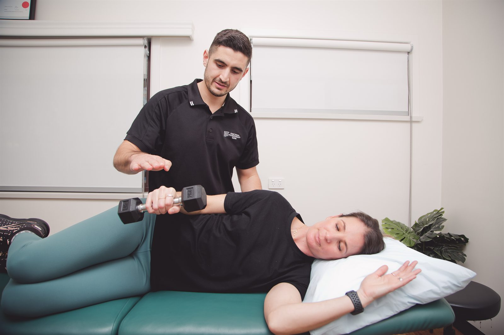

Your health, our commitment. Evidence-based, one-on-one physiotherapy in Dapto — helping people across the Illawarra recover from injury, manage pain and get moving again.

From a torn hamstring to a decade of back pain, every service has its own page with real detail.
Diagnosis, treatment and staged return-to-sport rehabilitation for athletes at every level.
Learn more02Hands-on treatment and targeted exercise for back pain, neck pain and sciatica.
Learn more03Precise needling of trigger points to release muscular tension and restore movement.
Learn more04Workers compensation physiotherapy focused on a safe, sustainable return to work.
Learn more05Goal-based physiotherapy for NDIS participants, in the clinic or at home across the Illawarra.
Learn more06Vestibular physiotherapy for BPPV and balance, plus treatment for neck-related headaches.
Learn more
Functional Physiotherapy is led by Chris Vitucci — masters-qualified, with eight years of clinical experience across private practice, sporting teams, aged care and disability services. The way we work is simple: assess properly, explain honestly, treat hands-on, and build the strength underneath it so the problem stays fixed.
Every appointment is one-on-one with your physiotherapist. You get a real explanation of what is going on, treatment on the day, and a plan you can actually follow — not a printout and a rebooking.
No. You can book directly as a private patient. A referral is only needed for a Medicare chronic condition plan.
Fees & rebatesPrivate health extras, Medicare referrals, WorkCover claims and NDIS plans are all handled here. We will tell you what you will pay before you book.
See the optionsA thorough assessment, a plain-English explanation, treatment on the day and a small number of exercises to start straight away.
Your first visitFootball and running clubs across the Illawarra — the people we see on the park as well as in the clinic.

[To confirm with Chris: the exact nature of each association — sponsor, official physio, or informal — so the heading can say what is actually true. Also confirm the fourth club: the brief said “IFS Wolves FC” but the supplied logo is the Wollongong Wolves crest.]
Based in Dapto, treating patients from across the region, with home visits available.
We are growing, and we would like to hear from physiotherapists who want to treat properly — one-on-one appointments, time to assess, and support to develop a special interest rather than run a conveyor belt.

Book online in under a minute, or call the clinic and we will find a time that works.